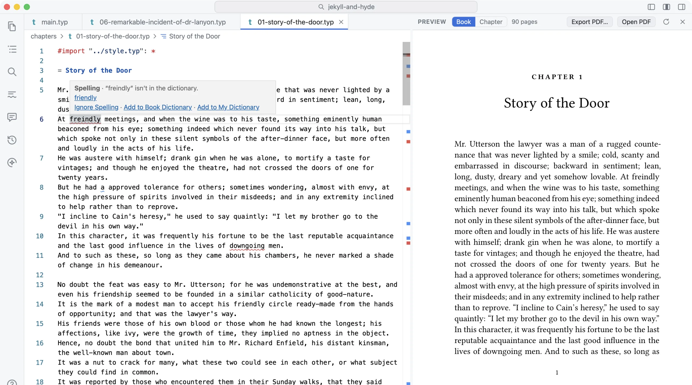
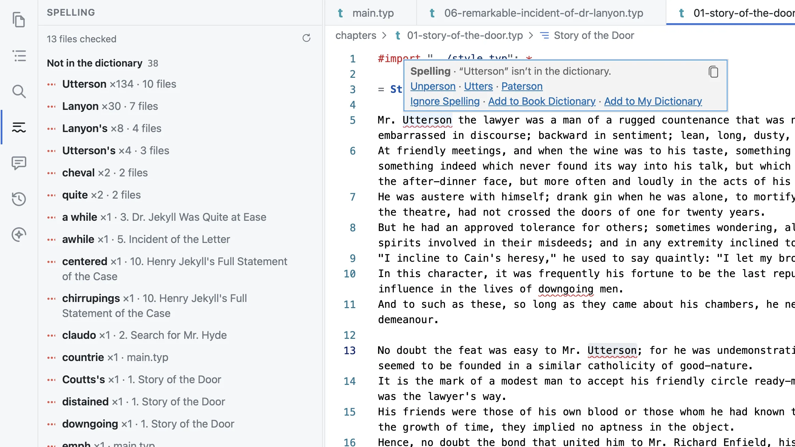

As you type
A moment after you stop typing, the chapter is checked. A word the dictionary doesn’t know gets a red wavy line. A grammar slip, like “an test”, “the the” or “their” for “there”, gets a blue one. The word you’re in the middle of typing isn’t marked until you’ve finished it.
Click a marked word, or right-click it, and its suggestions come up. Click one to put it in. A fix is a single step, so ⌘Z takes it out again. ⌘; goes to the next mistake, and ⌘. offers the fixes for the one under the cursor. The status bar counts them in the chapter you’re in: “4 spelling · 1 grammar”.
Squiggles never count as errors and never stop the book from typesetting. They’re notes for you, not for the printer.
What’s checked
Foreword reads your chapter the way Typst does, so it can tell your sentences from your markup.
- Your sentences
- Paragraphs, headings, list items, footnotes, captions and table cells. Bold and italic are read as part of their sentence:
This is *very* goodis checked as “This is very good”. - Spelling only
- Your comments to yourself, and the code in a programming book. Names in code are split into their words, so
tmie_zonesuggeststime_zone. - Left alone
- Maths, labels and references, file names, fonts and other settings. To start with, so are words in capitals, like SVD, and words with numbers in them, like FP32, as in Word.
Your book’s own words
A novel is full of words no dictionary has: its characters, its places, words its author made up. Right-click one for:
- Add to Book Dictionary
- For a word that belongs to this book, like Utterson. It’s kept in the book’s folder, so it goes wherever the book goes, and a co-author’s copy knows it too.
- Add to My Dictionary
- For a word you use in all your books. It’s kept on your Mac.
- Ignore
- Lets this one mistake be, in this one sentence, and the book remembers it. The same words anywhere else are still checked. Settings ▸ This book ▸ Spelling lists what you’ve ignored, each with See again.
Your Mac’s own dictionary is a second opinion. So words you’ve already taught your Mac in Pages or Mail aren’t marked here, and neither are terms it knows, like “eigenvector” and “orthonormal”.
The whole book at once
Going through a long book one squiggle at a time is slow. The Spelling view (down the left of the window, or Edit ▸ Show Spelling and Grammar, ⇧⌘;) checks every chapter. It lists each word the dictionary doesn’t know once, with how often it comes up and where, the most frequent first. In Jekyll and Hyde, “Utterson” comes top, 134 times across ten chapters, and one click puts it in the book’s dictionary. After the words comes the grammar, chapter by chapter.

Click a word to go to it, and click again for the next place it’s used. The list keeps up as you save, and when a chapter changes outside Foreword.
Other languages
A book is checked in its own language: the one its Typst sets (every Foreword template sets one), or the one you choose in Settings ▸ This book ▸ Spelling. English can be American, British, Canadian, Australian or Indian. A book checked as American but spelled the British way (“colour”, “theatre”) is offered British English, once.
A passage in another language is checked in that language. Select it and choose Set Language on the right-click menu. Foreword marks the passage the way Typst does, so it’s also hyphenated and given its quotation marks as that language when it’s typeset. Other languages use the dictionaries that come with your Mac, about forty of them, so there’s nothing to download.
Settings
Settings ▸ Spelling & Grammar has:
- Each check on or off: spelling, grammar, code, and Suggest style, a dotted purple line under wordiness and house-style choices (“in order to”, “non-zero” for “nonzero”). Those aren’t mistakes, so it’s off unless you want it.
- The language for books that don’t set one.
- Whether to skip words in capitals and words with numbers in them.
- Your dictionary, to find, add and remove words.
- Every grammar rule, to turn on or off. A few that misfire on careful prose, like “every one” for “everyone”, start off. Don’t Check for… on a grammar mistake turns its rule off from the editor.
Settings ▸ This book ▸ Spelling has the book’s own: its language, its dictionary, the mistakes you’ve ignored, and any rules it checks differently from your other books.
What it doesn’t do
- Grammar is checked in English only. Other languages get spelling.
- A language your Mac has no dictionary for isn’t checked at all, rather than being marked all in red.
- Like Word’s, the grammar check catches common slips, not everything, and it can question an unusual sentence that’s perfectly right, especially in older prose.
- It checks words, not writing: it won’t tell you a paragraph drags. For that, select it and ask the assistant.
- Squiggles show in the chapters you have open. The Spelling view checks the rest.